// actions
One wheel, many places to drop.
Each action lives on the wheel. Pick the ones you use, hide the rest.
Park it for later
Release a file on Pocket and it waits in the island at the top of the screen. Drag it out when you reach the folder.
Your folders, one hold away
Hold on Move and a ring of the folders you use opens. Release on one. Changed your mind? Undo.
Zip and unzip in one move
Release a folder to make a zip next to it. Release a zip, rar or 7z to extract it, and a locked one asks for the password.
Rename a whole batch, and see it first
Release a pile of files on Rename and every new name shows beside the old one as you type. Replace, add, number, change the case or the extension, or build names from a template. Nothing changes until you press Rename.
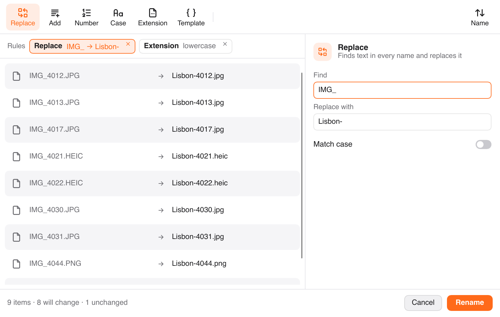
Every page, laid out to rearrange
Release one PDF or several and the pages open side by side. Merge files, drag pages into order, rotate or delete them, then save a new PDF, extract the pages you picked, split it, or turn pages into images. The original is never touched.
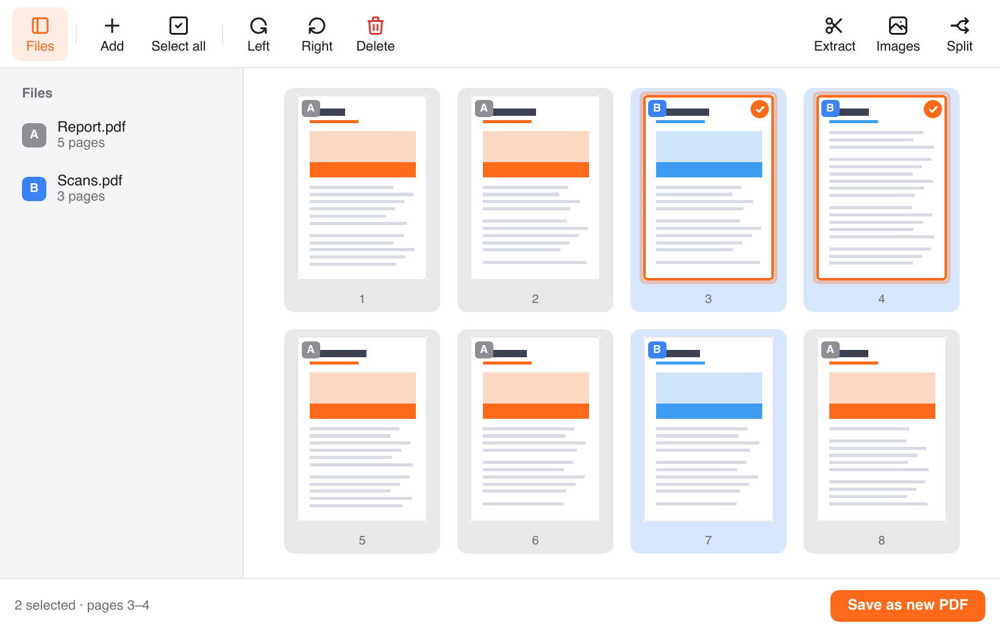
What's in there?
Size, file count and the biggest files, without opening Get Info. Everything else is one click away in the menu bar.
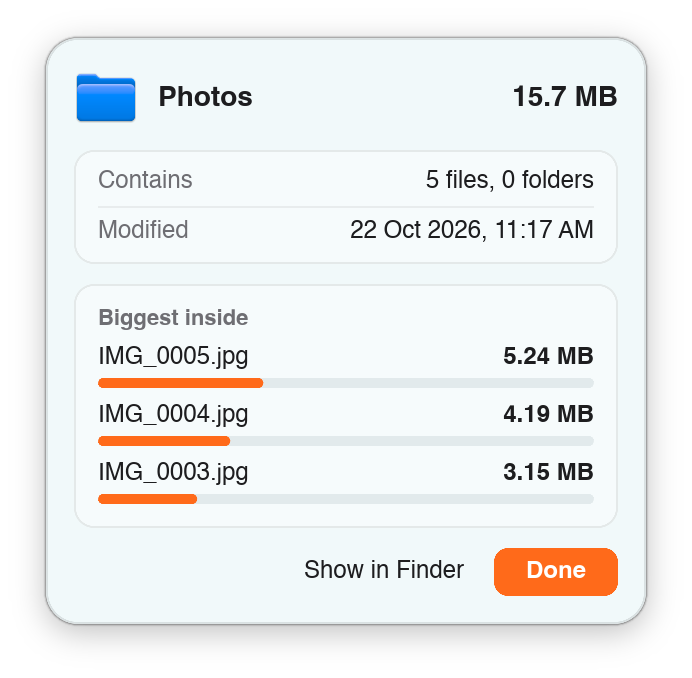
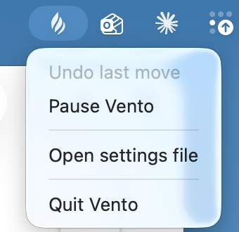
// island
What you copy and capture, one shortcut away.
The island at the top of the screen holds the Pocket, your clipboard history and your latest screenshots, a tab apart. The Vento icon in the menu bar, the taskbar or the top bar opens the Quick panel.
Clipboard history
Copy several things, paste them one by one. Click a copy to put it back exactly as it was, pin the ones you keep reaching for, and filter by text, links, pictures or files.
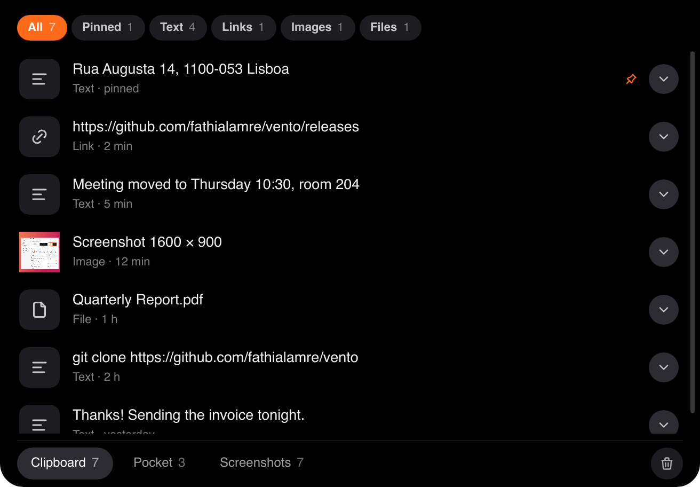
Your screenshots, sorted by day
A card drops from the island for each new screenshot: drag it anywhere, copy it or the text in it, or send it to the Pocket. The Screenshots tab keeps the last week close.
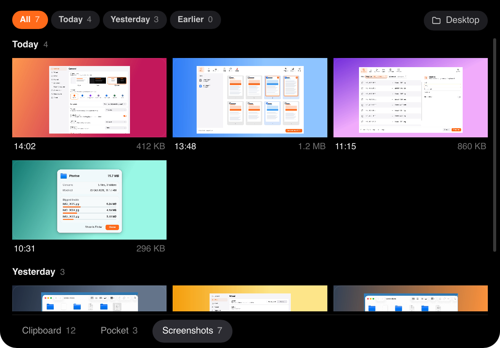
Keep the computer awake
Click the Vento icon and pick how long: 15 minutes, a few hours, until a time you choose, or until you stop it. A small cup sits beside the icon while it runs, and you decide whether the screen may still turn off.
// virtual island
No notch? Vento brings its own island.
On Windows and on Mac screens without a notch, the island sits on the top edge as a small glass pill. Clicks go straight through it to the window below. Push the pointer against the top edge and it opens.
It tells you how a job is going
Copy, move, zip, convert or rename, and the island wakes up: what is running and how far along it is, with Cancel. Then the result, with one button like Show or Undo, and it fades back to glass. On a Mac with a notch, the notch island does the same.
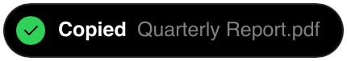
Shape it, place it, tone it down
Pick the Island or the Circle. Put it on the left, in the middle or on the right, or drag the open island's top bar anywhere along the edge, and let each screen keep its own place. Glass sets how see-through it rests. Choose one of five shimmers, or none, and how often it plays. Reduce motion in your system turns them off.
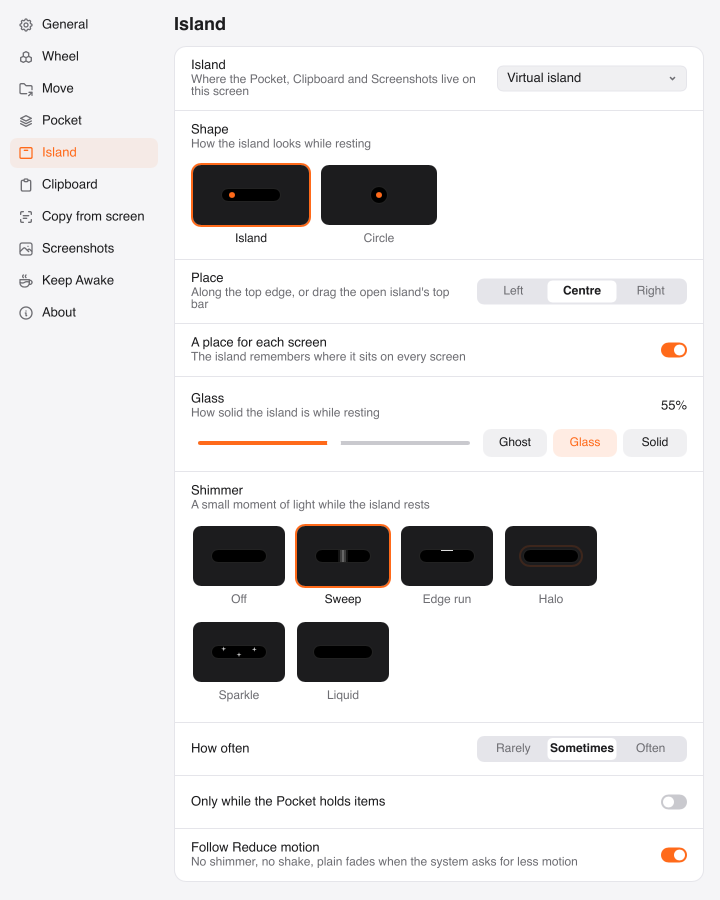
// settings
Make the wheel yours.
Pick a theme, order the actions, choose your folders, set the shortcuts, shape the island. One window, no account. Click a page to look around.
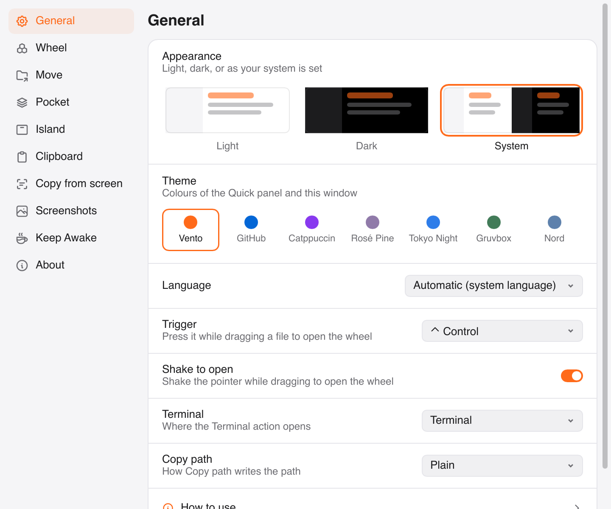
// platforms
Mac, Windows and Linux.
The same wheel, Pocket and island on all three, built from one code base. A few pieces are still on their way to Windows and Linux.
macOS
macOS 13+ · Apple Silicon
- The island by the notch, or the virtual island on screens without one
- Every action, Copy from screen and Share included
- Updates itself
- On an Intel Mac, build it yourself
Windows
Windows 10 and 11 · x64 and ARM64
- The virtual island on the top edge, or the island by the clock
- Installs for you alone, no administrator rights
- Updates itself
- Not yet: Copy from screen, Share, HEIC in Convert
Linux
GNOME on Wayland · Ubuntu
- The island in GNOME's top bar, beside the clock
- A small GNOME Shell extension shows Vento your drags
- Installs with one script
- Not yet: Copy from screen, the virtual island
// install
First launch takes a minute, once.
Vento isn't signed by Apple yet, so macOS warns you the first time you open it. Here's the way past it.
1 Open Vento, then click Done
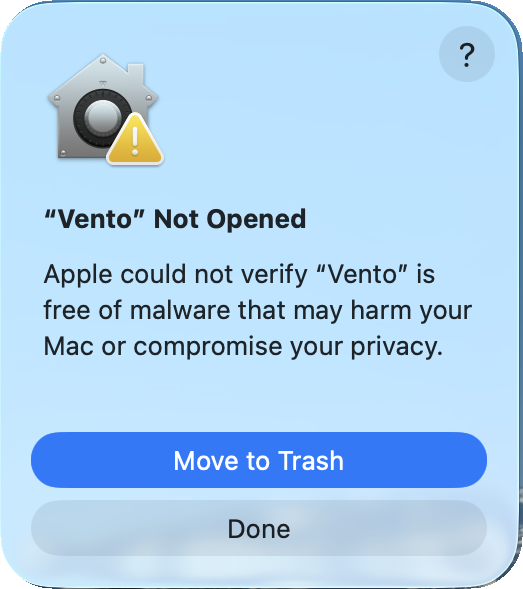
2 Privacy and Security → Open Anyway
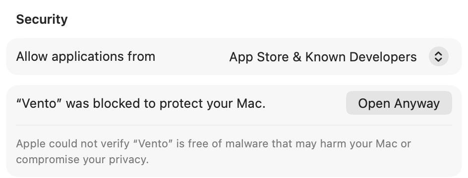
On macOS 13 or 14: Control-click Vento.app in Applications, choose Open, then Open again.
One setup, no administrator.
The setup installs Vento for you alone, on x64 and ARM64 PCs alike. Vento then sits in the taskbar's corner and keeps itself up to date.
The first Windows setup comes with the next release. Until then, build it from source.
If Windows says it protected your PC, click More info, then Run anyway.
One script, then log in again.
Vento runs on GNOME on Wayland, with a small GNOME Shell extension that tells it about your drags. The install script puts both in place for your user and starts Vento at every login.
# the packages it builds with sudo apt install build-essential libfontconfig1-dev libxkbcommon-dev libglib2.0-dev libheif-dev libxkbcommon-x11-0 git clone https://github.com/fathialamre/vento.git && cd vento scripts/install-linux.sh # log out and back in once, so GNOME loads the extension
Needs Rust and about 7 GB of memory for the release build. scripts/install-linux.sh --uninstall removes it all.